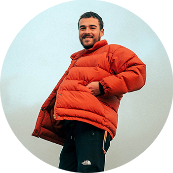

¿Tenés que hacer algún trámite urgente?
Te ponemos en contacto con un voluntario responsable designado por el Municipio para que realice los trámites que necesites. Solo esta persona verá tus datos y no los compartirá con nadie más.

Elegí el trámite que necesites
Voluntarios disponibles
Natalia Faristocco
Bienvenidos a mi perfil! Soy Natalia, abogada de f...

Lanús Este

22/23 trámites realizados
Bienvenidos a mi perfil! Soy Natalia, abogada de familia. Tengo mi propio estudio jurídico donde trabajo con algunas otras colegas. Me gusta poder ayudar, por eso estoy acá para asesorarte con los trámites legales que necesites hacer.
Federico Barrios
Hola! Soy Fede. Tengo 19 años, estoy estudiando la...
Lanús Oeste
14/16 trámites realizados
Hola! Soy Fede. Tengo 19 años, estoy estudiando la licenciatura en administración de empresas y trabajo en un emprendimiento familiar. Me gustaría usar los conocimientos que ya tengo para poder ayudar a quien lo necesite en este contexto tan complicado, así que me encuentro a su disposición!
Matías Luca
Buenas! Me dicen Mati, estudio audivisión pero...
Monte Chingolo
6/6 trámites realizados
Buenas! Me dicen Mati, estudio audivisión pero tengo conocimientos de economía por haber trabajado algunos años en la empresa de mi mamá. Estoy a disposición para lo que se necesite!
Indira Lopez
Hola hola :) Soy Indi, tengo 18 años y estoy cursan...
Remedios de Escalada
20/22 trámites realizados
Hola hola :) Soy Indi, tengo 18 años y estoy cursando el CBC de la carrera de ciencias económicas. Vengo de un secundario con orientación en economía también, por lo que ya tengo conocimiento de varias cosas y me gustaría poder ayudar con sus trámites a quienes lo necesiten!
Tomás García

Hola a todos! Soy Tomás, tengo 24 años y soy...
Valentín Alsina
20/20 trámites realizados
Hola a todos! Soy Tomás, tengo 24 años y soy liquidador de sueldos. Trabajo en el estudio contable de mi tía, una empresa 100% familiar. Me encuentro disponible para quien necesite mi ayuda con sus trámites.
Antonella Torres
Hola :) Me dicen Anto, estoy estudiando contad...
Villa Caraza
21/22 trámites realizados
Hola :) Me dicen Anto, estoy estudiando contaduría en la UBA. Estoy en mi tercer año, lista para realizar los trámites que necesiten!
Jimena Sánchez
¡Hola, soy Jime! Soy administrativa contable, pero...
Villa de los Industriales
32/32 trámites realizados
¡Hola, soy Jime! Soy administrativa contable, pero en mis tiempos libres practico yoga y medito. Ahora también quiero ayudar a las personas que lo necesiten, utilizando mis conocimientos del área, así que estoy disponible para que se pongan en contacto conmigo para que los ayude con sus trámites! Saludos a todos ♥
Enrique Rodriguez
Me llamo Enrique, tengo 26 años. Me falta una materia...
Villa Obrera
25/25 trámites realizados
Me llamo Enrique, tengo 26 años. Me falta una materia para recibirme de la carrera de asesor fiscal y contable. Estoy más que dispuesto a acompañar a la persona que lo necesite con sus trámites, preservando siempre su información. Por cualquier cosa ponganse en contacto conmigo!
Rodrigo Benitez
Hola gente! Soy Rodri, estoy estudiando contabilidad e...
Lanús Este
20/22 trámites realizados
Hola gente! Soy Rodri, estoy estudiando contabilidad en la Universidad de Lomas. Actualmente además trabajo como administrativo en el Banco Nación, así que estoy más que capacitado para realizar lo que necesiten! No duden en ponerse en contacto conmigo.
Locación
Bernardo Yrigoyen 451, Lanús, Buenos Aires, Argentina